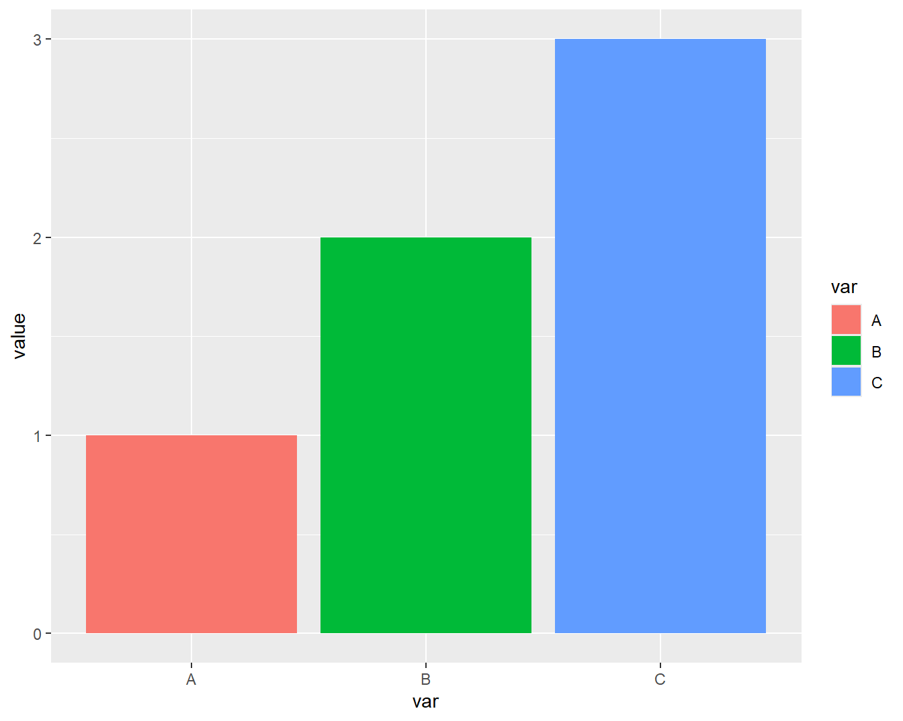

Apéndice 1. Sintaxis de Markdown
Fecha última actualización: 2026-08-17
Este apéndice recoge la sintaxis básica de R Markdown que se utiliza a lo largo del libro. Gran parte de esta referencia también está disponible en RStudio a través de la opción Markdown quick reference del menú de ayuda. Como referencia rápida puede consultarse también la ficha resumen de R Markdown.
Nota sobre Quarto. Quarto (
.qmd) es el sucesor de RMarkdown desarrollado por Posit (antes RStudio). Utiliza una sintaxis muy similar, pero incorpora mejoras como soporte nativo para múltiples lenguajes (R, Python, Julia, Observable), cuadros de mando, presentaciones y publicaciones web. La mayor parte de la sintaxis presentada en este apéndice es directamente compatible con Quarto. Para nuevos proyectos, se recomienda considerar Quarto como alternativa.
Formato de texto con Pandoc
Formato listas anidadas
1. item 1
+ item 1.1 # se dejan 4 espacios en blanco como margen por la izquierda
+ item 1.2
1. item 2Resultado compilado:
- item 1
- item 1.1
- item 1.2
- item 2
Formato tablas
+---------------+---------------+--------------------+
| A | B | C |
+===============+===============+====================+
| A0 | B1 | - C10 |
| | | - C11 |
+---------------+---------------+--------------------+
| A1 | B2 | - C20 |
| | | - C21 |
+---------------+---------------+--------------------+Resultado compilado:
| A | B | C |
|---|---|---|
| A0 | B1 |
|
| A1 | B2 |
|
Construcción de una tabla formateada a partir de un tibble mediante knitr::kable:
# knitr::kable convierte un tibble en una tabla formateada en el documento compilado
tibble(
año=c(1985,2000,2015),
España=c(38.734,40.75,46.122),
Francia=c(55.38,59.387,64.395),
Alemania=c(77.57,81.896,80.689)) |>
knitr::kable( caption = "Población anual en millones")| año | España | Francia | Alemania |
|---|---|---|---|
| 1985 | 38.734 | 55.380 | 77.570 |
| 2000 | 40.750 | 59.387 | 81.896 |
| 2015 | 46.122 | 64.395 | 80.689 |

Fórmulas matemáticas con LaTeX
RMarkdown permite insertar fórmulas matemáticas usando la sintaxis de LaTeX. Las fórmulas pueden aparecer dentro del texto (inline) o en un bloque separado (display).
Fórmulas inline
Para insertar una fórmula dentro del texto se encierra entre signos de dólar simples:
Resultado compilado: La famosa ecuación de Einstein es \(E = mc^2\) y la identidad de Euler \(e^{i\pi} + 1 = 0\).
Fórmulas en bloque
Para fórmulas centradas en su propia línea se usan dobles signos de dólar:
Resultado compilado:
\[ \bar{x} = \frac{1}{n} \sum_{i=1}^{n} x_i \]
Símbolos y operaciones habituales
A continuación se muestran los códigos LaTeX más usados con su resultado:
- Fracción:
\frac{a}{b}→ \(\frac{a}{b}\) - Subíndice:
x_{i}→ \(x_{i}\) - Superíndice:
x^{2}→ \(x^{2}\) - Raíz cuadrada:
\sqrt{x}→ \(\sqrt{x}\) - Sumatorio:
\sum_{i=1}^{n} x_i→ \(\sum_{i=1}^{n} x_i\) - Producto:
\prod_{i=1}^{n} x_i→ \(\prod_{i=1}^{n} x_i\) - Integral:
\int_{a}^{b} f(x)\,dx→ \(\int_{a}^{b} f(x)\,dx\) - Letras griegas:
\alpha, \beta, \gamma, \lambda, \sigma, \mu, \pi→ \(\alpha, \beta, \gamma, \lambda, \sigma, \mu, \pi\) - Desigualdades:
\leq, \geq, \neq→ \(\leq, \geq, \neq\) - Aproximación:
\approx→ \(\approx\) - Pertenencia:
\in→ \(\in\) - Infinito:
\infty→ \(\infty\) - Puntos suspensivos:
\cdots, \ldots→ \(\cdots, \ldots\) - Matriz:
\begin{pmatrix} a & b \\ c & d \end{pmatrix}→ \(\begin{pmatrix} a & b \\ c & d \end{pmatrix}\)
Ejemplo de fórmula compleja
La fórmula de la correlación que usamos en el curso se escribiría así:
$$
r = \frac{\sum_{k=1}^{m}(x_k - \bar{x})(y_k - \bar{y})}
{\sqrt{\sum_{k=1}^{m}(x_k - \bar{x})^2 \sum_{k=1}^{m}(y_k - \bar{y})^2}}
$$Resultado compilado:
\[ r = \frac{\sum_{k=1}^{m}(x_k - \bar{x})(y_k - \bar{y})} {\sqrt{\sum_{k=1}^{m}(x_k - \bar{x})^2 \sum_{k=1}^{m}(y_k - \bar{y})^2}} \]
Códigos en el fichero Markdown
Fragmentos de código (chunks)
La sintaxis de los chunks es la siguiente:
Opciones más útiles de los chunks de R Markdown
Las opciones más habituales de los chunks son:
include = FALSE— ni el código ni los resultados aparecen en el documento compilado, pero el código sí se ejecuta y sus resultados quedan disponibles para otros chunks.echo = FALSE— los resultados se muestran en el documento pero el código fuente no. Útil para informes dirigidos a un público no técnico.eval = FALSE— el código se muestra en el documento pero no se ejecuta. Útil para mostrar ejemplos de código sin ejecutarlos.message = FALSE— suprime los mensajes informativos generados por las funciones (por ejemplo, los avisos al cargar librerías).warning = FALSE— suprime los avisos (warnings) generados durante la ejecución.cache = TRUE— guarda el resultado del chunk y no lo vuelve a ejecutar mientras no se modifique. Muy útil para acelerar la compilación cuando hay operaciones costosas como cargas de datos o modelos.results = 'hide'— ejecuta el código pero oculta la salida textual. Útil cuando solo interesan los efectos secundarios (asignaciones, gráficos).fig.cap = "..."— añade una leyenda numerada a los resultados gráficos, necesaria para las referencias cruzadas con\@ref(fig:label).out.width='60%'— establece el ancho de la figura como porcentaje del ancho de la zona de texto.fig.asp=1.2— establece la proporción alto/ancho de la figura.fig.align='center'— centra la figura en la página.
Además, es posible asociar una etiqueta (label) a cada chunk escribiéndola al principio, justo después de ```{r. Esta etiqueta es imprescindible para poder referenciar figuras y tablas en el texto. El siguiente ejemplo muestra un chunk con etiqueta y sus principales opciones gráficas:
```{r chunk-label,fig.cap = "Leyenda figura",out.width='50%',fig.asp=0.8,fig.align='center',cache=TRUE}
tibble(var=c("A","B","C"),value=1:3) |>
ggplot(aes(x=var,y=value,fill=var)) +
geom_col()
``` 
Figure 8.14: Leyenda figura
Para establecer opciones por defecto que apliquen a todos los chunks del documento, se incluye al principio el siguiente bloque de configuración. Esto es especialmente útil para generar informes limpios sin código R visible:
Código R inline
Además de los chunks, podemos insertar el resultado de una expresión de R directamente dentro del texto. La sintaxis consiste en escribir, dentro de un par de acentos graves, la letra r seguida de la expresión R que se quiere evaluar:
Esto es muy útil para generar informes donde los valores se actualizan automáticamente al cambiar los datos. Por ejemplo, al escribir en el texto:
Al compilar, el texto anterior produciría algo como: “La tabla tiene 195 países y 15 variables.” (con los valores reales calculados en el momento de compilación). Esta funcionalidad se usa frecuentemente para incluir en el texto resultados de cálculos, fechas actualizadas o valores estadísticos sin necesidad de mantenerlos manualmente.
Inclusión de ficheros externos con child
Cuando un documento es muy largo, se puede dividir en varios ficheros .Rmd e incluirlos desde un fichero principal usando la opción child:
Este es precisamente el mecanismo que usa bookdown para combinar los diferentes capítulos del libro en un solo documento. Cada capítulo se escribe en un fichero .Rmd independiente y bookdown los une automáticamente siguiendo el orden especificado en el fichero de configuración _bookdown.yml.
Referencias cruzadas en bookdown
Cuando se usa bookdown (como en este libro), se dispone de un sistema de referencias cruzadas que permite enlazar figuras, tablas y secciones dentro del documento. Esto es especialmente útil en documentos largos donde el lector necesita navegar entre secciones relacionadas.
Referencias a figuras
Para que una figura sea referenciable, su chunk debe tener una etiqueta (label) y un fig.cap:
```{r mi-figura, fig.cap="Descripción de la figura"}
plot(1:10)
```
Como se puede observar en la Figura \@ref(fig:mi-figura), los valores crecen linealmente.La referencia \@ref(fig:...) se reemplaza automáticamente por el número de la figura al compilar. Es importante que la etiqueta del chunk no contenga guiones bajos (_), solo guiones normales (-).
Referencias a tablas
Para tablas generadas con knitr::kable, la referencia se genera a partir del caption:
Referencias a secciones
Las secciones se pueden referenciar si tienen un identificador. El identificador se asigna automáticamente a partir del título o se puede especificar manualmente:
Este sistema de referencias es una de las principales ventajas de bookdown sobre RMarkdown estándar, ya que permite que los números de figuras, tablas y secciones se actualicen automáticamente al añadir o reordenar contenido.
Bloques destacados (callout blocks)
En material docente es habitual usar bloques visuales para resaltar notas, avisos o información importante. En bookdown se pueden crear usando bloques div con clases CSS personalizadas cuya definición se encuentra habitualmente en un fichero de estilos estilos.css. Por ejemplo el código
<div class="nota">
<strong class="bloque-titulo">Atajos de teclado útiles en RStudio</strong>
* **Ejecutar una línea:** `Ctrl+Enter` (Windows/Linux) o `Cmd+Enter` (Mac).
* **Ejecutar varias líneas:** seleccionarlas con el ratón y usar el mismo atajo.
* **Ejecutar un chunk completo:** `Alt+Ctrl+C` (Windows) o `Alt+Cmd+Enter` (Mac), con el cursor en cualquier punto del chunk.
* **Maximizar ventana de edición:** `Mayúsculas+Ctrl+1` — alterna entre mostrar y ocultar los paneles secundarios de RStudio.
</div>genera la siguiente salida al compilar:
Atajos de teclado útiles en RStudio
- Ejecutar una línea:
Ctrl+Enter(Windows/Linux) oCmd+Enter(Mac). - Ejecutar varias líneas: seleccionarlas con el ratón y usar el mismo atajo.
- Ejecutar un chunk completo:
Alt+Ctrl+C(Windows) oAlt+Cmd+Enter(Mac), con el cursor en cualquier punto del chunk. - Maximizar ventana de edición:
Mayúsculas+Ctrl+1— alterna entre mostrar y ocultar los paneles secundarios de RStudio.
También se puede usar la sintaxis de Pandoc:
> **Nota:** Este es un texto destacado usando la sintaxis de bloque de cita
> de Markdown. Es la forma más sencilla y compatible de crear una nota visual.Resultado compilado:
Nota: Este es un texto destacado usando la sintaxis de bloque de cita de Markdown. Es la forma más sencilla y compatible de crear una nota visual.
Plantilla de informe de análisis de datos
Como cierre práctico del apéndice, se ofrece un esqueleto de informe reproducible que integra los elementos vistos a lo largo del libro: cabecera YAML, chunk de configuración, carga de librerías y datos, y una estructura de secciones que sigue las fases del análisis exploratorio de datos presentadas en la introducción. Puede copiarse en un fichero .Rmd nuevo y usarse como punto de partida:
---
title: "Informe de análisis de datos"
author: "Nombre y apellidos"
date: "`r Sys.Date()`"
output: html_document
---
```{r setup, include=FALSE}
# Opciones por defecto para todos los chunks
knitr::opts_chunk$set(echo = FALSE, message = FALSE, warning = FALSE)
library(tidyverse)
```
# Introducción
Objetivo del análisis y descripción de la fuente de datos.
# Datos
```{r cargar-datos}
datos <- read_csv("mis_datos.csv")
```
La tabla contiene `r nrow(datos)` registros y `r ncol(datos)` variables.
# Procesado y calidad de los datos
Limpieza, tipos, valores faltantes y transformaciones (formato tidy).
Un `skim(datos)` inicial ayuda a diagnosticar la tabla de un vistazo.
# Análisis y visualización
```{r grafico-principal, fig.cap="Descripción de la figura", fig.align='center'}
# ggplot / plotly / ...
```
Comentario e interpretación de los resultados, siempre apoyados en los datos.
# Conclusiones
Síntesis de los hallazgos, con sus limitaciones y la fuente de los datos.Esta plantilla materializa las buenas prácticas del curso: parámetros de chunk (echo, message, warning), código R inline para que las cifras se actualicen solas, figuras con fig.cap referenciables y una narrativa que va de los objetivos a las conclusiones sustentadas en datos.